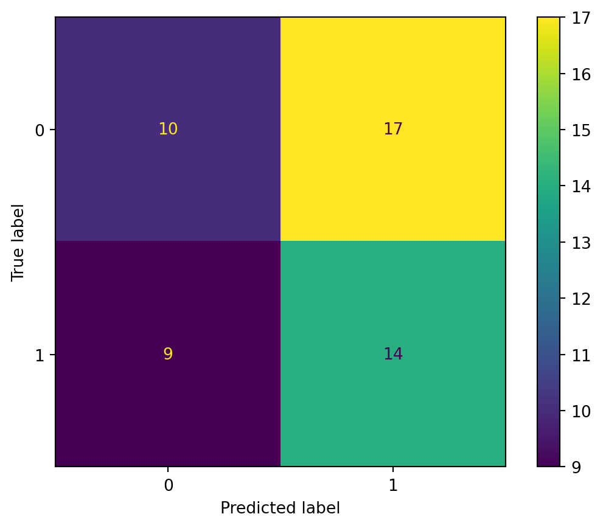

How the Words of One NFL Insider Relate to a Player’s Chance to Go in the First
Introduction
Professional sports “insiders” are paid a lot of money for their insights and analysis on the game they claim to know. But how much of what they say actually holds up in practice? Daniel Jeremiah is a former NFL scot and current NFL Network analyst who posts his ideas on the top 50 prospects in the NFL draft every year. This project will analyze the relationship between his scouting reports and the actual draft results to see how well his words hold up.
Tweet from Daniel Jeremiah
Primary Question
The main question this project will answer is this: Can a single person’s work accurately predict the likelihood of a player going in the first round of the NFL draft? Daniel Jeremiah is the subject of this project due to his status as an NFL Network analyst and the availability of his past scouting reports.
Scraping and Cleaning
In order to perform analysis on Jeremiah’s statements, they first need to be scraped from the NFL website. For this project his Top 50 prospects from 2020-2025 were scraped and cleaned, then saved into a csv file.
from bs4 import BeautifulSoupimport requestsimport pandas as pdimport re# Daniel Jeremiah Top 50 2020url ='https://www.nfl.com/news/daniel-jeremiah-s-top-50-2020-nfl-draft-prospect-rankings-2-0-0ap3000001102767'# Scrape and processresponse = requests.get(url)soup_20 = BeautifulSoup(response.text, 'html.parser')top_50_2020 = soup_20.select('.nfl-c-article__container')article_range =range(0, len(top_50_2020))top_50_2020 = [top_50_2020[x].text for x in article_range]# Convert to dataframedf_2020 = pd.DataFrame(columns = ['Name', 'Position', 'School', 'Report'])# Pull data into dataframefor i inrange(2, 52): name = re.findall(r'\d+\)\s([A-Za-z\s\.\',\-]+),', top_50_2020[i])[0] position = re.findall(r'(?<=, ).*', top_50_2020[i])[0] school = re.findall(r'(?<=: ).* (?=[|])', top_50_2020[i])[0] report =max(re.findall(r'(?<=[\n\n]).*', top_50_2020[i]), key=len) df_2020.loc[len(df_2020)] = {'Name': name, 'Position': position, 'School': school, 'Report': report}# Scrape Daniel Jeremiah Top 50 2021url ='https://www.nfl.com/news/daniel-jeremiah-s-top-50-2021-nfl-draft-prospect-rankings-3-0'# Scrape and processsoup_21 = BeautifulSoup(requests.get(url).text, 'html.parser')top_50_2021_info = soup_21.select('.nfl-o-ranked-item__content')top_50_2021_report = soup_21.select('.nfl-c-body-part--text')article_range =range(0, len(top_50_2021))report_range =range(0, len(top_50_2021_report))top_50_2021_info = [top_50_2021[x].text for x in article_range]top_50_2021_report = [top_50_2021_report[x].text for x in report_range]# Convert to dataframedf_2021 = pd.DataFrame(columns = ['Name', 'Position', 'School', 'Report'])# Pull info into dataframefor i inrange(0, 50): name = re.findall(r'([A-Za-z\s\.\',\-]+)\n\n', top_50_2021_info[i])[0] position = re.findall(r'·\s*([^·]+)\s* ·', top_50_2021_info[i])[0] school = re.findall(r'\n\s*([^\n\r·]+)\s*·', top_50_2021_info[i])[0] df_2021.loc[len(df_2021)] = {'Name': name, 'Position': position, 'School': school, 'Report': top_50_2021_report[i +1]}# Clean dataframedf_2021['Report'] = df_2021['Report'].str.strip()df_2021['Name'] = df_2021['Name'].str.strip()# Scrape Daniel Jeremiah Top 50 2022url ='https://www.nfl.com/news/daniel-jeremiah-s-top-50-2022-nfl-draft-prospect-rankings-3-0'# Scrape and processsoup_22 = BeautifulSoup(requests.get(url).text, 'html.parser')top_50_2022_info = soup_22.select('.nfl-o-ranked-item__content')top_50_2022_report = soup_22.select('.nfl-c-body-part--text')article_range =range(0, len(top_50_2022_info))report_range =range(0, len(top_50_2022_report))top_50_2022_info = [top_50_2022_info[x].text for x in article_range]top_50_2022_report = [top_50_2022_report[x].text for x in report_range]# Convert to dataframedf_2022 = pd.DataFrame(columns = ['Name', 'Position', 'School', 'Report'])# Pull info into dataframefor i inrange(0, 50): name = re.findall(r'([A-Za-z\s\.\',\-]+)\n\n', top_50_2022_info[i])[0] position = re.findall(r'·\s*([^·]+)\s* ·', top_50_2022_info[i])[0] school = re.findall(r'\n\s*([^\n\r·]+)\s*·', top_50_2022_info[i])[0] df_2022.loc[len(df_2022)] = {'Name': name, 'Position': position, 'School': school, 'Report': top_50_2022_report[i +1]}# Clean dataframedf_2022['Report'] = df_2022['Report'].str.strip()df_2022['Name'] = df_2022['Name'].str.strip()# Scrape Daniel Jeremiah Top 50 2023url ='https://www.nfl.com/news/daniel-jeremiah-s-top-50-2023-nfl-draft-prospect-rankings-4-0'# Scrape and processsoup_23 = BeautifulSoup(requests.get(url).text, 'html.parser')top_50_2023_info = soup_23.select('.nfl-o-ranked-item__content')top_50_2023_report = soup_23.select('.nfl-c-body-part--text')article_range =range(0, len(top_50_2023_info))report_range =range(0, len(top_50_2023_report))top_50_2023_info = [top_50_2023_info[x].text for x in article_range]top_50_2023_report = [top_50_2023_report[x].text for x in report_range]# Convert to dataframedf_2023 = pd.DataFrame(columns = ['Name', 'Position', 'School', 'Report'])# Pull info into dataframefor i inrange(0, 50): name = re.findall(r'([A-Za-z\s\.\',\-]+)\n\n', top_50_2023_info[i])[0] position = re.findall(r'·\s*([^·]+)\s* ·', top_50_2023_info[i])[0] school = re.findall(r'\n\s*([^\n\r·]+)\s*·', top_50_2023_info[i])[0] df_2023.loc[len(df_2023)] = {'Name': name, 'Position': position, 'School': school, 'Report': top_50_2023_report[i +1]}# Clean dataframedf_2023['Report'] = df_2023['Report'].str.strip()df_2023['Name'] = df_2023['Name'].str.strip()# Scrape Daniel Jeremiah Top 150 2024url ='https://www.nfl.com/news/daniel-jeremiah-s-top-150-prospects-in-the-2024-nfl-draft-class'# Scrape and processsoup_24 = BeautifulSoup(requests.get(url).text, 'html.parser')top_150_2024_info = soup_24.select('.nfl-o-ranked-item__content')top_150_2024_report = soup_24.select('.nfl-c-body-part--text')article_range =range(0, len(top_150_2024_info))report_range =range(0, len(top_150_2024_report))top_150_2024_info = [top_150_2024_info[x].text for x in article_range]top_150_2024_report = [top_150_2024_report[x].text for x in report_range]# Convert to dataframedf_2024 = pd.DataFrame(columns = ['Name', 'Position', 'School', 'Report'])# Pull info into dataframefor i inrange(0, 50): name = re.findall(r'([A-Za-z\s\.\',\-]+)\n\n', top_150_2024_info[i])[0] position = re.findall(r'·\s*([^·]+)\s* ·', top_150_2024_info[i])[0] school = re.findall(r'\n\s*([^\n\r·]+)\s*·', top_150_2024_info[i])[0] df_2024.loc[len(df_2024)] = {'Name': name, 'Position': position, 'School': school, 'Report': top_150_2024_report[i +3]}# Clean dataframedf_2024['Report'] = df_2024['Report'].str.strip()df_2024['Name'] = df_2024['Name'].str.strip()# Scrape Daniel Jeremiah Top 50 2025url ='https://www.nfl.com/news/daniel-jeremiah-s-top-50-2025-nfl-draft-prospect-rankings-1-0'# Scrape and processsoup_25 = BeautifulSoup(requests.get(url).text, 'html.parser')top_50_2025_info = soup_25.select('.nfl-o-ranked-item__content')top_50_2025_report = soup_25.select('.nfl-c-body-part--text')article_range =range(0, len(top_50_2025_info))report_range =range(0, len(top_50_2025_report))top_50_2025_info = [top_50_2025_info[x].text for x in article_range]top_50_2025_report = [top_50_2025_report[x].text for x in report_range]# Convert to dataframedf_2025 = pd.DataFrame(columns = ['Name', 'Position', 'School', 'Report'])# Pull info into dataframefor i inrange(0, 50): name = re.findall(r'([A-Za-z\s\.\',\-]+)\n\n', top_50_2025_info[i])[0] position = re.findall(r'·\s*([^·]+)\s* ·', top_50_2025_info[i])[0] school = re.findall(r'\n\s*([^\n\r·]+)\s*·', top_50_2025_info[i])[0] df_2025.loc[len(df_2025)] = {'Name': name, 'Position': position, 'School': school, 'Report': top_50_2025_report[i +3]}# Clean dataframedf_2025['Report'] = df_2025['Report'].str.strip()df_2025['Name'] = df_2025['Name'].str.strip()# Save dataframes#df_2020.to_csv('data/scoutingreports/jeremiah_2020.csv', index=False)#df_2021.to_csv('data/scoutingreports/jeremiah_2021.csv', index=False)#df_2022.to_csv('data/scoutingreports/jeremiah_2022.csv', index=False)#df_2023.to_csv('data/scoutingreports/jeremiah_2023.csv', index=False)#df_2024.to_csv('data/scoutingreports/jeremiah_2024.csv', index=False)#df_2025.to_csv('data/scoutingreports/jeremiah_2025.csv', index=False)
In order to properly perform text analysis on these reports, the text needs to be properly cleaned and tokenized. The stopwords used to clean the data were scraped from the SMART Stopwords.
# Link to SMART stopwordsurl ='http://www.ai.mit.edu/projects/jmlr/papers/volume5/lewis04a/a11-smart-stop-list/english.stop'# Get the page and convert it to a BeautifulSoup objectresponse = requests.get(url)soup = BeautifulSoup(response.content, 'html.parser')# Convert soup to a liststopwords = soup.get_text().split()# Convert to dataframe and save to CSVstopwords_df = pd.DataFrame(stopwords, columns=['stopword'])#stopwords_df.to_csv('data/stopwords.csv', index=False)
Methods
Now that the data has been scraped and the stopwords are ready, the next step is to perform text analysis on the reports. The first step is to clean the text and remove stopwords. The next step is to tokenize the text and count the frequency of each word.
import nltkfrom nltk.stem import WordNetLemmatizerimport pandas as pdimport xgboost as xgbfrom sklearn.feature_extraction.text import TfidfVectorizerfrom sklearn.model_selection import train_test_split, RandomizedSearchCV, GridSearchCVfrom sklearn.metrics import accuracy_score, confusion_matrix, ConfusionMatrixDisplayimport plotly.express as pximport matplotlib.pyplot as pltimport dalex as dximport shapimport numpy as npimport pandas as pd# Read in datafirst_rounders = pd.read_csv('G:/My Drive/Py Projects/nfl-draft-preview/data/2020_to_2024_first_rounders.csv')report_20 = pd.read_csv('G:/My Drive/Py Projects/nfl-draft-preview/data/scoutingreports/jeremiah_2020.csv')report_21 = pd.read_csv('G:/My Drive/Py Projects/nfl-draft-preview/data/scoutingreports/jeremiah_2021.csv')report_22 = pd.read_csv('G:/My Drive/Py Projects/nfl-draft-preview/data/scoutingreports/jeremiah_2022.csv')report_23 = pd.read_csv('G:/My Drive/Py Projects/nfl-draft-preview/data/scoutingreports/jeremiah_2023.csv')report_24 = pd.read_csv('G:/My Drive/Py Projects/nfl-draft-preview/data/scoutingreports/jeremiah_2024.csv')report_25 = pd.read_csv('G:/My Drive/Py Projects/nfl-draft-preview/data/scoutingreports/jeremiah_2025.csv')stopwords = pd.read_csv('G:/My Drive/Py Projects/nfl-draft-preview/data/stopwords.csv')# Combine reportsreports_past = pd.concat([report_20, report_21, report_22, report_23, report_24])# Dummy first roundersreports_past['first_rounder'] = reports_past['Name'].isin(first_rounders['Player']).astype(int)# Lemmatize firstw_tokenizer = nltk.tokenize.WhitespaceTokenizer()lemmatizer = nltk.stem.WordNetLemmatizer()def lemmatize_text(text):return [lemmatizer.lemmatize(word) for word in w_tokenizer.tokenize(text)]reports_past['report_lemmatized'] = reports_past['Report'].apply(lemmatize_text)# Remove stopwordsreports_past['report_lemmatized'] = reports_past['report_lemmatized'].apply(lambda x: [item for item in x if item notin stopwords['stopword'].values])# Define dataframexgb_df = reports_past[['report_lemmatized', 'first_rounder']].copy()
After this I convert the text into a format that can be used in a machine learning model. The TfidfVectorizer will be used to convert the text into a matrix of TF-IDF features.
# Convert text to TF-IDF featuresvectorizer = TfidfVectorizer()tfidf_matrix = vectorizer.fit_transform(xgb_df['report_lemmatized'].apply(lambda x: ' '.join(x)))# Make sure output is interpretablefeature_names = vectorizer.get_feature_names_out()df_tfidf = pd.DataFrame(tfidf_matrix.toarray(), columns=feature_names)
Once this is done, the data is ready to be set up for model training. Once this is done we can train the model and see how well it performs initially.
# INITIAL XGBoost classifierxgb_clf = xgb.XGBClassifier(objective='binary:logistic', random_state=102701)# Split dataX_train, X_test, y_train, y_test = train_test_split(df_tfidf, xgb_df['first_rounder'], test_size=0.2, random_state=102701)# Fit to training dataxgb_clf.fit(X_train, y_train)# Create basic predictionsy_pred = xgb_clf.predict(X_test)initial_accuracy = accuracy_score(y_test, y_pred)# Check confusion matrix to see where the model strugglesconf_matrix = confusion_matrix(y_test, y_pred)cm_display = ConfusionMatrixDisplay(conf_matrix).plot()plt.show()

The initial accuracy of the model is 48.0%. This is a good starting point, but the model can be further tuned to improve accuracy.
After this, the model can be tuned to find the best hyperparameters.
# Split validation set from training setX_train, X_val, y_train, y_val = train_test_split(X_train, y_train, test_size=0.2, random_state=102701)# Fit model to training data for tuningeval_metrics = ['auc', 'error']model_1 = xgb.XGBClassifier(learning_rate =0.1, n_estimators =500, random_state =102701, early_stopping_rounds =10, eval_metric=eval_metrics, objective='binary:logistic')eval_set =[(X_train, y_train), (X_val, y_val)]model_1.fit(X_train, y_train, eval_set=eval_set, verbose=True)# Extract evaluation resultseval_results = model_1.evals_result()# Graph error vs. number of iterationsplt.figure(figsize = (12, 8))epochs =len(eval_results['validation_1']['error'])x_axis =range(0, epochs)plt.plot(x_axis, eval_results['validation_0']['error'], label =f'Learning Rate: {0.01}')plt.legend()plt.ylabel('Error')plt.xlabel('Iterations')plt.title('XGBoost Error vs. Iterations')plt.show()# Set up tuning gridparam_grid = { 'max_depth': [3, 5, 7, 10],'min_child_weight': [1, 3, 10],'learning_rate': [0.1], 'n_estimators': [100], 'subsample': [1.0],'colsample_bytree': [1.0], 'reg_alpha': [1e-5],'early_stopping_rounds':[10],'scale_pos_weight': [0.5626],}# Set up grid searchgrid_search = GridSearchCV( estimator = xgb_clf, param_grid = param_grid, scoring ='accuracy', n_jobs =1, cv =5, verbose =1)# Fit grid searchgrid_search.fit(X_train, y_train, eval_set=eval_set, verbose=True)# Extract best parametersbest_params = grid_search.best_params_best_score = grid_search.best_score_print(f'Best parameters: {best_params}')print(f'Best cross-validation score: {best_score}')# Tune subsample and colsample_bytreeparam_grid = {'max_depth': [10],'min_child_weight': [1],'learning_rate': [0.1], 'n_estimators': [100], 'subsample': [0.5, 0.75, 1.0],'colsample_bytree': [0.5, 0.75, 1.0], 'reg_alpha': [1e-5],'early_stopping_rounds':[10],'scale_pos_weight': [0.5625],}# Set up grid searchgrid_search = GridSearchCV( estimator = xgb_clf, param_grid = param_grid, scoring ='accuracy', n_jobs =1, cv =5, verbose =1)# Fit grid searchgrid_search.fit(X_train, y_train, eval_set=eval_set, verbose=True)# Extract best parametersbest_params = grid_search.best_params_best_score = grid_search.best_score_print(f'Best parameters: {best_params}')print(f'Best cross-validation score: {best_score}')# Tune reg_alphaparam_grid = {'max_depth': [10],'min_child_weight': [1],'learning_rate': [0.1], 'n_estimators': [100], 'subsample': [1.0],'colsample_bytree': [0.75], 'reg_alpha': [1e-5, 1e-2, 0.1, 1, 100],'early_stopping_rounds':[10],'scale_pos_weight': [0.5625],}# Set up grid searchgrid_search = GridSearchCV( estimator = xgb_clf, param_grid = param_grid, scoring ='accuracy', n_jobs =1, cv =5, verbose =1)# Fit grid searchgrid_search.fit(X_train, y_train, eval_set=eval_set, verbose=True)# Extract best parametersbest_params = grid_search.best_params_best_score = grid_search.best_score_print(f'Best parameters: {best_params}')print(f'Best cross-validation score: {best_score}')# Tune learning rateslearning_rates = [0.0005, 0.001, 0.05, 0.01, 0.03, 0.05, 0.1]eval_results = {}for lr in learning_rates: model = xgb.XGBClassifier(learning_rate = lr, n_estimators =500, random_state =102701, early_stopping_rounds =100, eval_metric=eval_metrics, objective='binary:logistic') eval_set =[(X_train, y_train), (X_val, y_val)] model.fit(X_train, y_train, eval_set=eval_set, verbose=False) eval_results[f'lr_{lr}'] = model.evals_result()# Plot learning rate resultsplt.figure(figsize = (12, 8))for lr, result in eval_results.items(): epochs =len(result['validation_1']['error']) x_axis =range(0, epochs) plt.plot(x_axis, result['validation_1']['error'], label =f'Learning Rate: {lr}')plt.legend()plt.ylabel('Error')plt.xlabel('Iterations')plt.title('XGBoost Error vs. Iterations for Varying Learning Rates')plt.show() # Final tuned modelxgb_final = xgb.XGBClassifier(max_depth =10, min_child_weight =1, learning_rate =0.01, n_estimators =100, subsample =1.0, colsample_bytree =0.75, reg_alpha =0.1, early_stopping_rounds =10, scale_pos_weight =0.5625, objective='binary:logistic', random_state=102701)# Fit modelxgb_final.fit(X_train, y_train, eval_set=[(X_val, y_val)], verbose=True)# Predict on test sety_pred = xgb_final.predict(X_test)
The now tuned model can be used to predict the likelihood of a player going in the first round based on their scouting report for the 2025 class.
# Apply to 2025 prospectsreport_25['report_lemmatized'] = report_25['Report'].apply(lemmatize_text)report_25['report_lemmatized'] = report_25['report_lemmatized'].apply(lambda x: [item for item in x if item notin stopwords['stopword'].values])# Convert text to TF-IDF featurestfidf_matrix_25 = vectorizer.transform(report_25['report_lemmatized'].apply(lambda x: ' '.join(x)))# Make sure output is interpretabledf_tfidf_25 = pd.DataFrame(tfidf_matrix_25.toarray(), columns=vectorizer.get_feature_names_out())# Predict probabilities on 2025 prospectsxgb_preds_proba = xgb_final.predict_proba(df_tfidf_25)[:, 1]# Add predictions to the dataframereport_25['first_rounder_proba'] = xgb_preds_proba# Rank prospects by likelihood of being a first rounderreport_25_ranked = report_25.sort_values(by='first_rounder_proba', ascending=False)
Results
Now that the heavy lifting is done from building the model, the results are ready to be interpreted. The idea here is that this model can be used to predict the likelihood of a player going in the first round based on their scouting report. Perhaps unsurprisingly, the results may not look exactly how we expected them to.
# Display the ranked prospectsranked = pd.read_csv('G:/My Drive/Py Projects/nfl-draft-preview/data/scoutingreports/jeremiah_2025_ranked.csv')print(ranked.to_markdown())
Now that we know how the model feels about the 2025 prospects, it is important to remember that this is just one model and one person’s opinion. Fully tuned the model was still only 54% accurate. Despite this, the importance of machine learning interpretability cannot be understated, so let’s take a look at the SHAP values to see what the model is thinking.
# Get SHAP valuesexplainer = shap.Explainer(xgb_final)shap_values = explainer(df_tfidf_25)# Show top 10 SHAP valuesshap.summary_plot(shap_values, df_tfidf_25, plot_type="bar", max_display=10)# Plot beeswarmshap.plots.beeswarm(shap_values)# Waterfall for T.J. Sandersshap.plots.waterfall(shap_values[41])# Waterfall for Travis Huntershap.plots.waterfall(shap_values[1])# Waterfall for Abdul Cartershap.plots.waterfall(shap_values[0])
Beeswarm Visualization of SHAP values
The model assigns high values of “starter”, “move”, and “overall” with a negative impact on the likelihood of being a first rounder. These words may be tough to interpret in this scenario. Moving down, higher values of slot is also associated with lower first-round likelihood. A “slot” reciever is a player who lines up in the slot position, which is between the offensive line and the outside receiver. This position is typically not as highly valued as the outside receiver position, which may explain the negative impact on the likelihood of being a first rounder. As expected, higher values of “size”, “tackle”, and “quickness” are associated with a higher likelihood of being a first rounder. These are all attributes that are highly valued in the NFL.
Next, let’s take a look at some interesting player cases and see why the model attributed the probability that it did to them. First up, T.J. Sanders.
Waterfall Visualization of Important Features influencing T.J. Sanders
As previously stated, the words “starter” and “move” negatively impact a player’s likelihood of being a first rounder. In Sanders’ case, these words do not appear in his scouting report, leading to them greatly impacting his first-round likelihood. The words “blocks”, “explosive”, and “tackle” all appear in his report with a positive impact.
The next player to inspect is Travis Hunter.
Waterfall Visualization of Important Features influencing Travis Hunter
Just like Sanders, Hunter does not have the words “starter” or “move” in his report. For anyone who has kept up with college football discourse in 2024, one of Hunter’s greatest attributes is his ability to play both sides of the ball. This is reflected in the word “time” having a positive value and one of the highest impacts on his first-round likelihood.
Finally, let’s take a look at Abdul Carter. Carter is widely considered as one of the best prospects in this class, but the model has him very low on the first-round likelihood list. Let’s inspect why.
Waterfall Visualization of Important Features influencing Abdul Carter
When looking at this graph, the high negative impact of the word “move” jumps off the screen. Carter’s ability to move between positions on the defense, whether on the line or as a linebacker, is a key part of his game. The model interprets “move” as a negative attribute, which is likely why Carter is so low on the first-round likelihood list.
Discussion
At the end of the day, Insiders like Jeremiah are paid for their ability to generate buzz and “clicks”. As far as I know they do not voice their opinions on players so that people can run Machine Learning models on them but that is exactly what I did. The low model accuracy and the negative impact of certain words on a player’s likelihood of being a first rounder show that the model may not be the best way to predict a player’s draft position. However, the SHAP values show that the model is able to pick up on certain attributes that are highly valued in the NFL, such as size and quickness. The main takeaway from this project is that while scouting reports may be interesting to read and generate buzz, they may not be the best way to predict a player’s draft position.